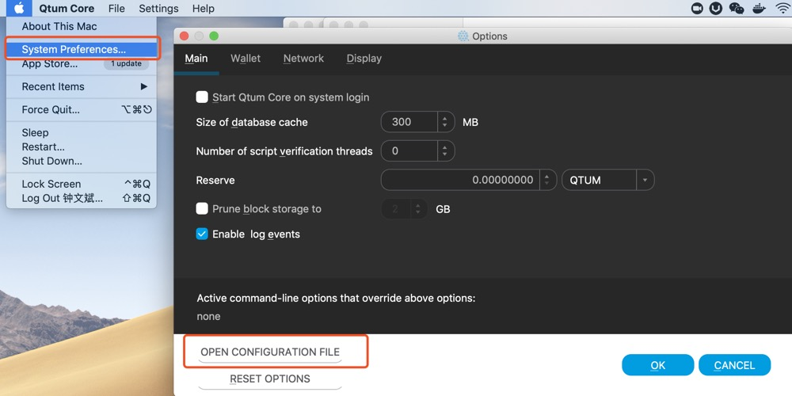

How to add options for Evo node（or add config file）
User can specify extra options (or set configurations) for Evo node, in order to enable/disable some specific features, other than default settings.
This tutorial describes how to specify options (or configurations) to Evo node.
For Evo PC wallet（Evo Core qt wallet）
(This works for both PC wallet and command-line evod wallet)
Evo PC wallet (i.e. evo core qt wallet) is the most widely used Evo wallet by common users. (Not yet installed a wallet? Please visit https://evoeco.io/wallet to download latest pc wallet）
User can edit evo config file to specify some options.
Instructions:
1. Create evo.conf file
Create a file named evo.conf under your datadir, the default datadir paths for different OS are different:
- Linux: ~/.evo
- OSX: ~/Library/Application Support/Evo
- Windows: %APPDATA%\Evo (Please paste this path to your windows explorer, the path will be resolved automatically)
Please be careful and don‘t remove or change any content under this directory except you are aware of them.
（PS: the datadir might be manually set as well, so please create your evo.conf under the datadir you spcified, if you did)
Still don't know how to create a file? You can also open this evo.conf on the wallet UI directly System Preference->OPEN CONFIGURATION FILE:

This will create and open the evo.conf directly for user.
2. Specify the options
User can then specify any option in the file evo.conf just created.
For example, to specify some rpc related settings, user might add following lines to evo.conf:
rpcuser=test
rpcpassword=test1234
server=1
This will set rpcuser to test, rpcpassword to test1234, and enable the server feature.
3. Restart wallet
It is required to RESTART the wallet after editing the evo.conf file, before the options are really effective.
Other options
To learn more about the complete list of all valid Evo options, please check the pc wallet menu for more details:
Help->Command-line Options:


For the command-line wallet evod
If your have no idea about command line, please ignore this section.
For those who are familiar with command line, you can also specify options by adding options when running evod.
For example：
./evod -rpcuser=test -rpcpassword=test1234 -server=1
These options -rpcuser=test -rpcpassword=test1234 -server=1 realize the same configuration setting as the "Specify the options" section described.
Note that if you specify the options through evod command line, same options will be required to add to corresponding evo-cli command, e.g.:
./evo-cli -rpcuser=test -rpcpassword=test1234 getinfo
Check options list by command line
You can check the complete option list with：
./evod -help